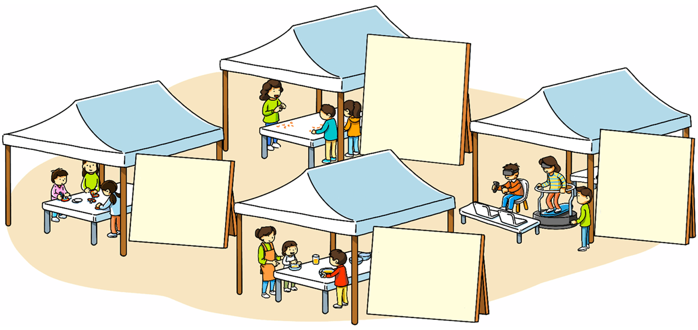

- 그림
- 물음 1
- 물음 2
- 물음 +
-
무지개 팽이
만들기
(18분 20초)단풍 씨앗
헬리콥터
만들기
(17분 10초)드라이아이스
슬러시 만들기
(10분 30초)가상 현실
체험하기
(15분 16초) -
하고 싶은 체험 활동 2가지를 골라 두 활동을 모두 하는 데 걸리는 시간을 구해 보세요.
예분32초26 -
18분 20초 동안 무지개 팽이를 만들고 50초 동안 돌리려고 합니다. 무지개 팽이를 만들고 돌리는 데 걸리는 시간을 구해 보세요.
18분 20초 ＋ 50초 19분 10초 -
18분 20초와 50초를 더한 시간은 어떻게 구할 수 있을까요?
18분 20초에 40초를 더하면 19분이고 19분에 10초를 더하면 19분 10초입니다.